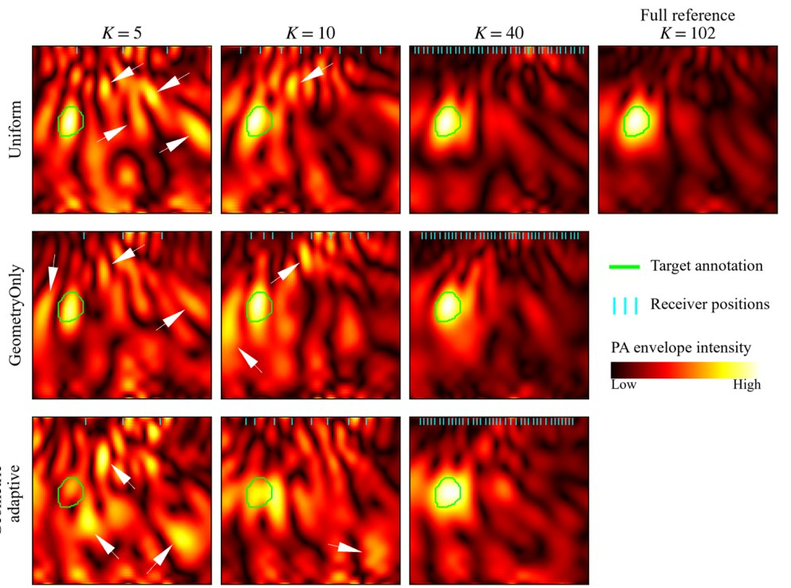

01 / ADAPTIVE NON-CONTACT PAMANUSCRIPT SUBMITTED

How many measurements do we really need?
I develop and evaluate sequential sparse-acquisition algorithms for steerable laser Doppler vibrometry. Receiver positions are selected as RF measurements arrive, enabling partial images to guide later measurements without a full prescan.
Adaptive optimizationLDV / RF dataBeamformingLocalization
In retrospective phantom evaluation, Geometric Adaptive met the joint localization and competing-response criterion at 35/102 positions for the 2-mm reference-annotation tolerance. This is not a prospectively validated stopping rule.